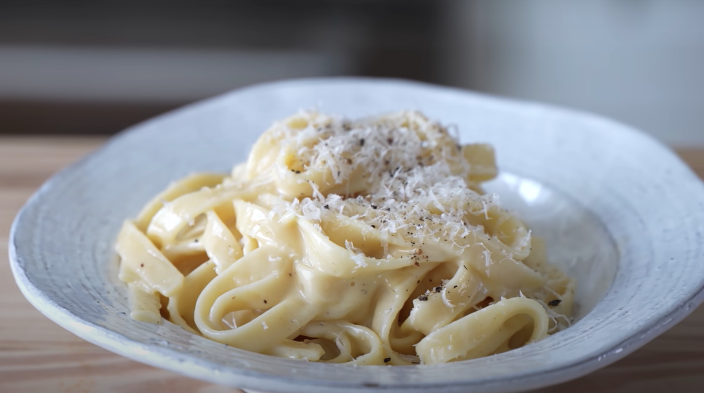
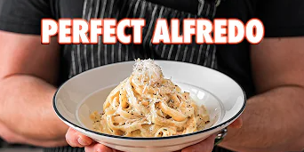

Fetuccine al Burro

Ingredients:
- 14 oz / 400g pasta Fettuccine
- 1/2 cup (115g) unsalted butter, softened
- 2 cups 250g grated parmigiano reggiano
- Salt and pepper to taste
Instructions:
- Place fettuccine in a pot of boiling water that has been seasoned generously with salt. Cook according to package instructions or until done.
- In a large bowl, add softened unsalted butter and season with pepper.
- Reserve ¾ cup of pasta water. Drain the pasta.
- Immediately add pasta to the large bowl and toss with the butter vigorously.
- Once butter is melted, add in grated parmigiano reggiano. Toss until combined using pasta water as needed to melt the cheese. Season with salt and pepper.
- Serve in a bowl topped with additional parmigiano reggiano.
Click the thumbnail below to watch how Joshua Weissman goes about cooking this delicious meal.

Go back home